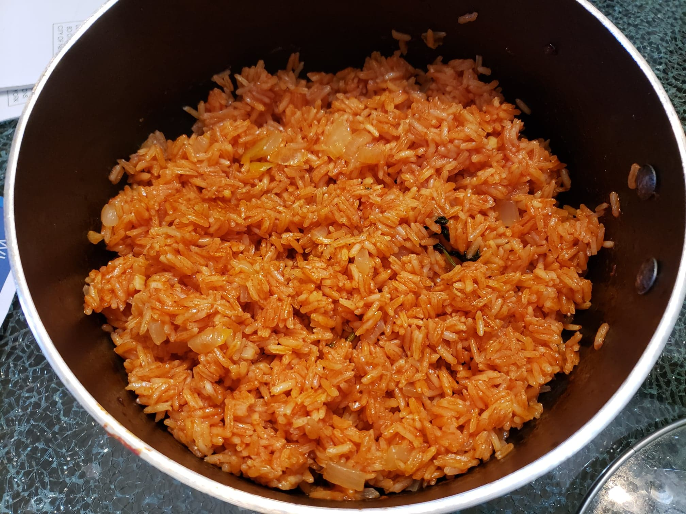

Mexican Red Rice

Ingredients:
- 1 1/2 tbsp Olive Oil
- 2 cloves Garlic, minced
- 1/2 White onion, diced
- 1 cup Long grain white rice, uncooked
- 1 3/4 cups Chicken broth
- 2 1/2 tbsp tomato paste
- 1/4 tsp Salt
- 1 sprig Cilantro
- Optional: 1 Serrano or Jalapeño pepper
Instructions:
- Heat oil in a large saucepan over medium heat. Add garlic, stir briefly, then add onion. Cook for 4 - 5 minutes until translucent.
- Add rice, broth, salt and tomato paste. Stir until tomato paste is dissolved.
- Add in cilantro and jalapeño if using. Cover, bring to simmer, then lower heat to low so the water is simmering gently.
- Cook for 15 minutes or until the liquid is absorbed (tilt pot to check).
- Remove from heat, leave lid on and rest for 10 minutes. The residual liquid on the surface of the rice will get absorbed and rice will become more fluffy.
- Fluff the rice with a fork.